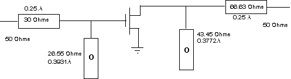

Example: Small Signal Amplifier Design Using S-Parameters-Impedance match Example: Small Signal Amplifier Design Using S-Parameters-Impedance match
Example: Small Signal Amplifier Design Using S-Parameters-Impedance match Example: Small Signal Amplifier Design Using S-Parameters-Impedance matchAfter finding the required input and output impedance our next task is to design a suitable network to provide optimum match. For maximum power the matching circuit should be conjugate of the required impedance. We proceed with the design by transferring the source impedance to the schematic by using the transfer menu and design a suitable network for input match. For the output match we have to transfer the load impedance to the schematic menu.
a:) The figure below shows the input and output match to 50 ohms which may be verified by the user as an exercise.
